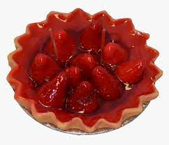

Strawberry Pie

How to make a Strawberry Pie
- step 1:Arrange half of strawberries in baked pastry shell. Mash remaining berries and combine with sugar in a medium saucepan.
Place saucepan over medium heat and bring to a boil, stirring frequently.
- step 2:In a small bowl, whisk together cornstarch and water. Gradually stir cornstarch mixture into boiling strawberry mixture.
Reduce heat and simmer mixture until thickened, about 10 minutes, stirring constantly.
Pour mixture over berries in pastry shell.
- step 3:Pour or scoop the batter onto the griddle, using approximately 2 tablespoons for each
crepe. Tip and rotate pan to spread batter as thinly as possible. Brown on both sides.
Repeat with remaining batter. Serve hot.
Home Page